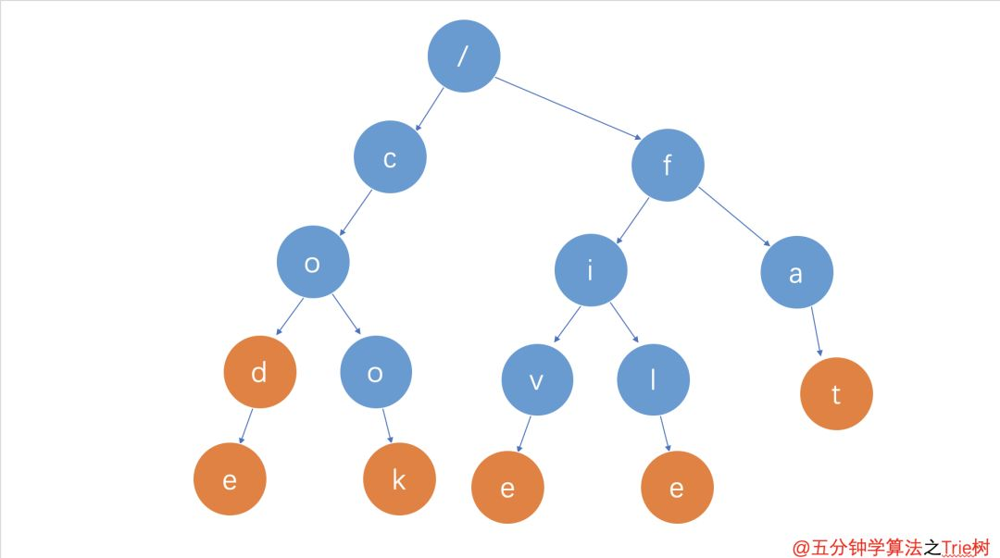

字典树
前言
本人平时学习及收集内容，欢迎参入一起讨论。
内容
一、Tire 树
Trie 这个名字取自“retrieval”，检索，因为 Trie 可以只用一个前缀便可以在一部字典中找到想要的单词。
Tire 树，也叫“字典树”。顾名思义，它是一个树形结构。它是一种专门处理字符串切尔西的数据结构，用来解决在一组字符串集合中快速查找某个字符串的问题。
此外 Trie 树也称前缀树（因为某节点的后代存在共同的前缀，比如 pan 是 panda 的前缀）。
它的 key 都为字符串，能做到高效查询和插入，时间复杂度为 O(k)，k 为空符串长度，缺点是如果大量字符串没有共同前缀时很耗内存。
它的核心思想就是通过最大限度地减少无谓的字符串比较，舍不得查询效率，即用空间换时间，再利用共同前缀来提高查询效率。
二、Trie 树的特点
假设有 5 个字符串，它们分别是：code，cook，five，file，fat。现在需要在里面多次查找某个字符串是否存在。如果每次查找，都是拿要查找字符串跟这 5 个字符串今次进行字符串匹配，那效率就比较低，有没有更高效的方法呢？
如果将这 5 个字符串组织成下图的结构，从肉眼上扫描过感官上是不是比查找起来会更加迅速。

通过上图，可以发现 Trie 树的三个特点：
- 根节点不包含字符，除根节点外每一个节点都只包含一个字符
- 从根节点到某一个节点，路径上经过的字符连接起来，为该节点对应的字符串
- 每个节点的所有子节点节点包含的字符都不相同
通过动画理解 Trie 树构造的过程。在构造过程中的每一步，都相当于往 Trie 树中插入一个字符串。当所有字符串都插入完成之后，Trie 树就构造好了。

三、Trie 树的插入操作

Trie 树的插入操作很简单，其实就是将单词的每个字母逐一插入 Trie 树。插入前先看字母对应的节点是否存在，存在则共享该节点，不存在则创建对应的节点。比如要插入新单词cook，就有下面几步：
- 插入第一个字母
c，发现root节点下方存在子节点c，则共享节点c - 插入第二个字母
o，发现c节点下方存在子节点o，则共享节点o - 插入第三个字母
o，发现o节点下方不存在子节点o，则创建子节点o - 插入第四个字母
o，发现o节点下方不存在子节点k，则创建子节点k - 至此，单词
cook中所有字母已被插入Trie树中，然后设置节点k中的标志位，标记路径root->c->o->o->k这条路径上所有节点的字符可以组成一个单词cook
四、Trie 树的查询操作
在 Trie 树中查找一个字符串的时候，比如查找字符串code，可以将要查找的字符串分割成单个的字符 c，o，d，e，然后从 Trie 树的根节点开始匹配。如图所示，绿色的路径就是在 Trie 树中匹配的路径。

如果要查找的是字符串cod呢？还是可以用上面同样的方法，从根节点开始，沿着某条路径来切尔西，如图所示，绿色的路径，是字符串cod匹配的路径。但是，路径的最后一个节点 d 并不是橙色的，并不是单词标志位，所以cod字符不存在。也就是说，cod是某个字符串的前缀子串，但并不能完全匹配任何字符串。

五、Trie 树的删除操作
Trie 树的删除操作与二叉树的删除操作有类似的地方，需要考虑删除的节点所处的位置，这里分三种情况进行分析：
5.1 删除整个单词（比如 hi）

- 从根节点开始查找第一个字符
h - 找到
h子节点后，继续查找h的下一个子节点i i是单词hi的标志位，将该标志位去掉i节点是hi的叶子节点，将其删除- 删除后发现
h节点为叶子节点，并且不是单词标志位，也将其删除 - 这样就完成了
hi单词的删除操作
5.2 删除前缀单词（比如 cod）

这种方式删除比较简单。
只需要将cod单词整个字符串查找完后，d节点因为不是叶子节点，只需将其单词标志去掉即可。
6.3 删除分支单词（比如 cook）

与删除整个单词情况类似，区别点在于删除到cook的第一个o时，该节点为非叶子节点，停止删除，这样就完成cook字符串的删除操作。
六、相关代码实现
七、Trie 树的应用
事实上 Trie 树，在日常生活中的使用随处可见，比如这个：
具体来说就是经常用于统计和排序大量的字符串（但不仅限于字符串），所以经常被搜索引擎系统用于文本词频统计。它的优点是：最大限度地减少无谓的字符串比较，查询效率比哈希表高。
7.1 前缀匹配
例如：找出一个字符串集合中所有以五分钟开头的字符串。我们只需要用所有字符串构造一个 trie 树，然后输出以 五->分->钟 开头的路径上的关键字即可。
trie 树前缀切尔西常用于搜索提示。如当输入一个网址，可以自动搜索出融通的选择。当没有完全匹配搜索结果，可以返回前缀相似的可能。

7.2 字符串检索
给出 N 个单词组成的熟词表，以及一篇使用小写英文书写的文章，按最早出现的顺序写出所有不丰熟词表中的生词。
检索/查询功能是 Trie 树最原始的功能。给定一级字符串，查找某个字符串是否出现过，思路就是从根节点开始一个一个字符进行比较。
- 如果沿路比较，发现不同的字符，则表示该字符串在集合中不存在。
- 如果所有的字符全部比较完并且全部相同，还需判断最后一个节点的标志位（标记该节点是否代表一个关键字）。
八、Trie 树的局限性
如前文所讲，Trie 的核心思想是空间换时间，利用字符串的公共前缀来降低查询时间的开销以达到提高效率的目的。
假设字符的种数有m个，有若干个长度为n的字符串构成了一个Trie树 ，则每个节点的出度为m（即每个节点的可能子节点数量为 m），Trie 树 的高度为n。很明显我们浪费了大量的空间来存储字符，此时 Trie 树的最坏空间复杂度为 O(m^n)。也正由于每个节点的出度为 m，所以我们能够沿着树的一个个分支高效的向下逐个字符的查询，而不是遍历所有的字符串来查询，此时 Trie 树的最坏时间复杂度为 O(n)。
这正是空间换时间的体现，也是利用公共前缀降低查询时间开销的体现。
参考资料
联系作者
平凡世界，贵在坚持。